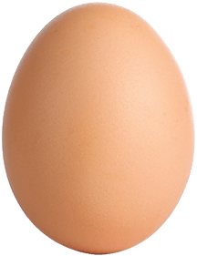

Paso 2
Los huevos son sumergidos en agua, en un proceso de tiempo y temperatura controlada, monitoreados de manera computarizada.
- No cocina el huevo
- No altera su delicioso sabor
- No cambia su contenido nutricional


Regresa a huevoskikes.com
Llega un plus de vida a tu mesa. Kikes Plus, los únicos huevos en cáscara pasteurizados de Colombia. Huevos pasteurizados, Huevos más Seguros.
Pasamos nuestros Kikes por un proceso de pasteurización donde resultan huevos más seguros para cualquier preparación.
Seleccionamos los huevos más frescos de nuestras granjas certificadas.
Los huevos son sumergidos en agua, en un proceso de tiempo y temperatura controlada, monitoreados de manera computarizada.
Los huevos Kikes Plus son cubiertos por una capa de cera que los protege de factores externos.
100%
Los huevos Kikes Plus son marcados con una P para distinguirlos de los Kikes tradicionales.
Los huevos Kikes Plus son luego puestos en su empaque transparente, el cual es marcado con su número de lote, el día de empaque y fecha de vencimiento para garantizar su trazabilidad.
VER VIDEO PROCESO DE PASTEURIZACIÓN
Encuentra los Huevos Kikes Plus en almacenes Exito y Carulla de Medellín y Bogotá. Pronto estarán disponibles en el resto del país.